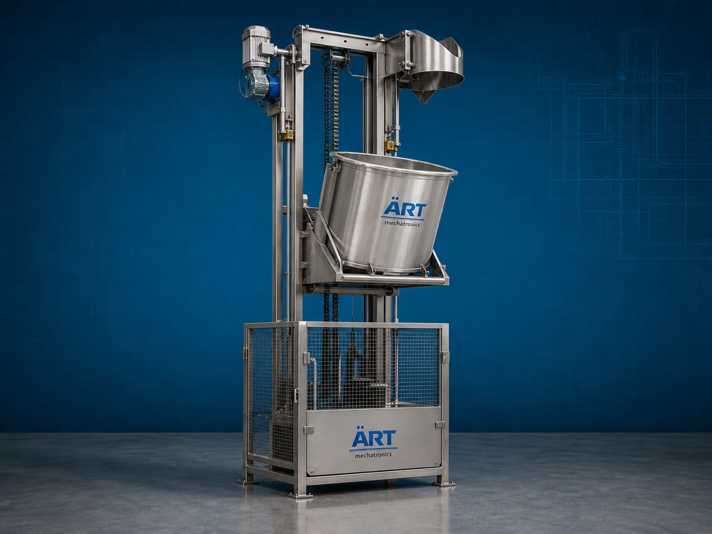

Single Bucket Elevator Machine (Industrial Controlled Vertical Material Handling & Lifting System)
A Single Bucket Elevator Machine, also known as a Single Bucket Conveyor Elevator or Industrial Single Bucket Lifting System, is a specialized material handling equipment designed for controlled vertical lifting and transfer of powders, granules, tablets, capsules, food ingredients, seeds, chemicals, and bulk materials using a single bucket lifting mechanism operating in repetitive upward and downward cycles.

About the Single Bucket Elevator
Single bucket elevator systems are widely used for:
- Controlled batch material lifting
- Hygienic product transfer
- Precise feeding operations
- Vertical material transportation
- Packaging machine feeding
- Dust-free product handling
The machine improves:
- Material handling accuracy
- Product safety and hygiene
- Production automation
- Controlled feeding efficiency
- Labor reduction
- Space optimization
Unlike continuous bucket elevators, single bucket elevators use:
- Individual bucket lifting systems
- Controlled vertical movement
- Precise material discharge
- Gentle product handling mechanisms
to transport materials carefully without spillage or product damage.
Single bucket elevator machines are widely used in industries such as:
Food processing industries
Pharmaceutical industries
Chemical industries
Packaging industries
Nutraceutical industries
Grain processing plants
Cosmetic industries
FMCG industries
where controlled and hygienic vertical material transfer is essential.
The machine is highly suitable for:
- Powder lifting
- Tablet transfer
- Capsule handling
- Packaging machine feeding
- Granule conveying
- Hygienic ingredient transfer
ART Mechatronics offers high-performance single bucket elevator machines, engineered for continuous industrial operation, precision material handling, hygienic conveying, and reliable long-term performance.
Working Principle of Single Bucket Elevator Machine
Powders, granules, tablets, capsules, or bulk materials are loaded into bucket at feeding point
Motor-driven lifting system moves single bucket upward along vertical guide structure
Bucket carries material safely to elevated discharge point
Machine handles:
- Powders
- Granules
- Tablets
- Capsules
- Seeds
- Food ingredients
- Chemical materials with gentle and accurate transfer.
Controlled bucket motion minimizes: Product breakage Material spillage Dust generation Contamination risks
Bucket tilts or opens automatically at discharge position
Empty bucket returns to loading position for next operating cycle
Types of Single Bucket Elevator Machines
- 1. Food Grade Single Bucket Elevator
Designed for: ✔ Hygienic food processing applications
- 2. Pharmaceutical Single Bucket Elevator
Suitable for: ✔ Tablet, capsule, and powder handling systems
- 3. Stainless Steel Single Bucket Elevator
Uses: ✔ Corrosion-resistant hygienic construction
- 4. Automatic Single Bucket Elevator
Designed for: ✔ Fully automated packaging and production lines
- 5. Heavy Duty Industrial Single Bucket Elevator
Suitable for: ✔ Continuous industrial material handling operations
- 6. Packaging Feeding Bucket Elevator
Designed for: ✔ Feeding packaging machines and process equipment
Industries Using Single Bucket Elevator Machines
🍃 Food Processing Industry Hygienic ingredient lifting systems 💊 Pharmaceutical Industry Tablet and powder transfer systems ⚗️ Chemical Industry Controlled powder and granule lifting systems 📦 Packaging Industry Packaging machine feeding systems 🌾 Grain Processing Industry Seed and grain handling systems 🧴 Cosmetic Industry Cosmetic powder conveying systems 🌱 Nutraceutical Industry Supplement ingredient handling systems 🛒 FMCG Industry Consumer product material transfer systems
Features & Advantages
- Precise and controlled material lifting system
- Hygienic and contamination-free product handling
- Suitable for fragile and delicate products
- Low product breakage and material spillage
- Compact space-saving vertical design
- Continuous industrial operation
- Easy integration with packaging and processing machines
- Energy-efficient operation
- Low maintenance and easy cleaning system
Technical Highlights
Elevator Type: Single bucket lifting system Batch bucket elevator Precision feeding elevator Construction: Stainless Steel / Mild Steel Bucket Material: Food-grade bucket Stainless steel bucket Lifting System: Motorized lifting mechanism Guided vertical motion system Operation: Automatic loading and discharge cycle Automation: Semi-automatic Fully automatic PLC-based systems
Turnkey Single Bucket Elevator Solutions
ART Mechatronics offers: Complete single bucket elevator systems Packaging line feeding solutions Hygienic bulk material handling systems Food and pharma automation integration Installation & commissioning After-sales service & AMC
Why Choose Art Mechatronics
Expertise in hygienic industrial material handling systems Customized single bucket elevator solutions for multiple industries High-performance and durable industrial construction Energy-efficient and reliable lifting systems Proven industrial performance across sectors
Applications
Food Processing Plants Pharmaceutical Manufacturing Units Packaging Facilities Chemical Industries Nutraceutical Production Plants FMCG Manufacturing Units
Related Conveying & Handling machines
Get pricing & specs for the Single Bucket Elevator
Share the product, target capacity, current process and plant location. These details help our engineers discuss the right machine or line configuration.
One partner, from design to start-up
ART Mechatronics designs, manufactures, installs and commissions your Single Bucket Elevator solution with regional presence in India, UAE and Thailand.